Energie
- Tepelná čerpadla vzduch–voda
- Fotovoltaická elektrárna na střeše
- Podlahové vytápění
- Bez plynové přípojky
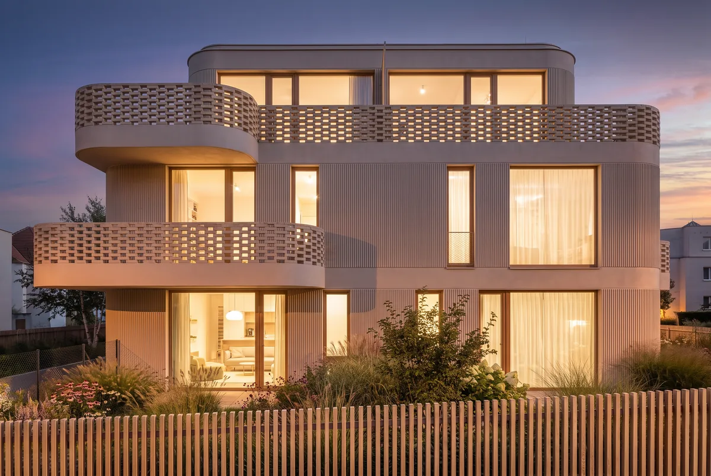
Předprodej zahájen · stavební řízení zahájeno
Šest bytů v domě se zaoblenými rohy a fasádou z perforovaného zdiva. Vždy jen dva byty na podlaží.
Vizualizace · JA Architekti
01 Dům
Nároží ulic Do čtvrti a Malá Tyršovka. Ustupující poslední podlaží, zaoblené rohy a zábradlí z perforovaných cihel, které propouští světlo i soukromí.


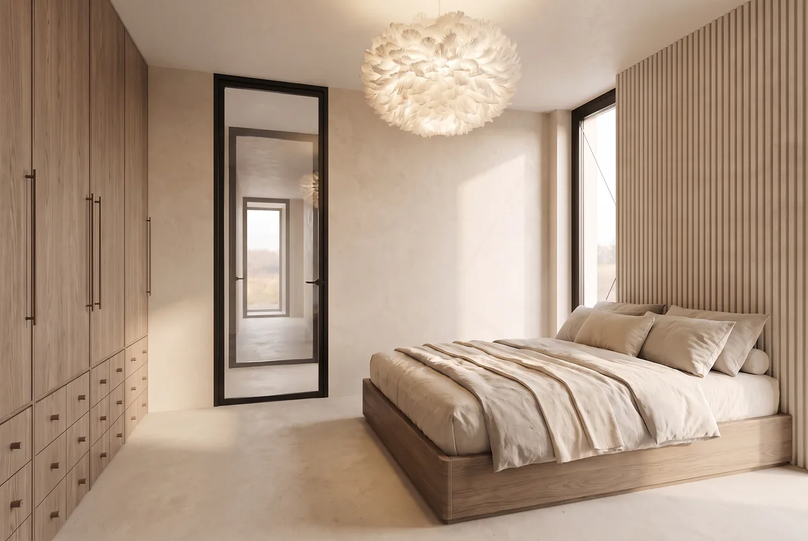
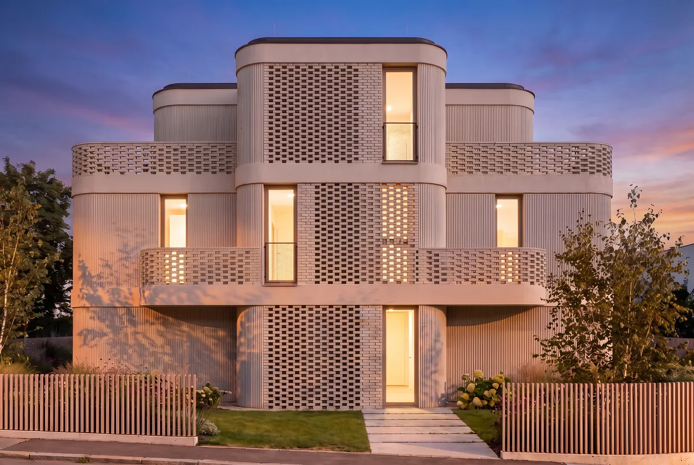
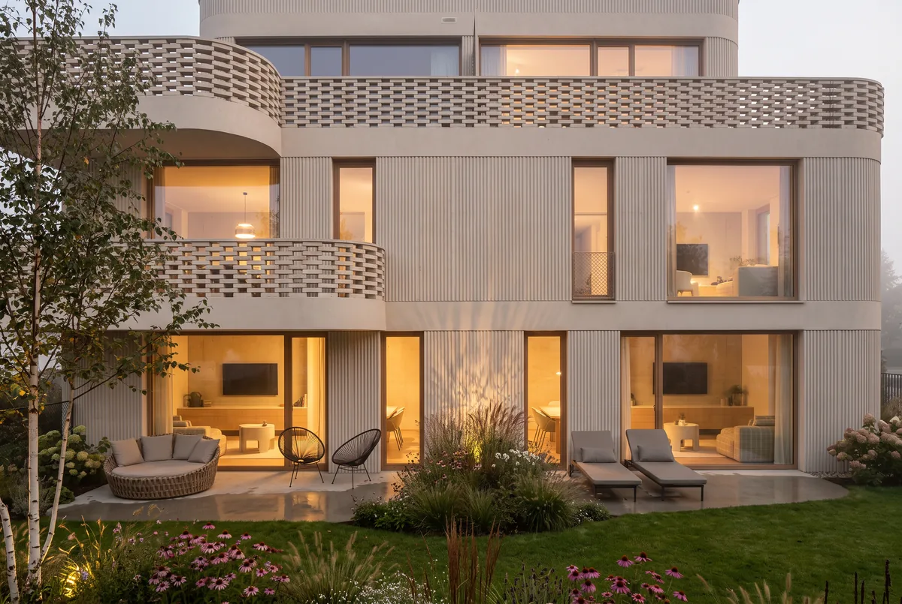
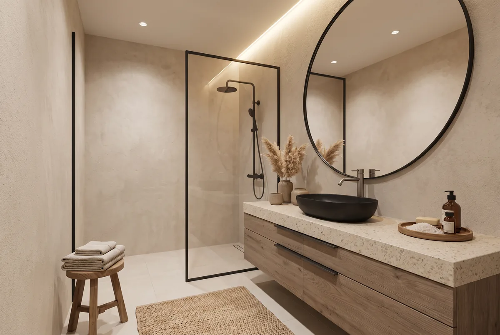
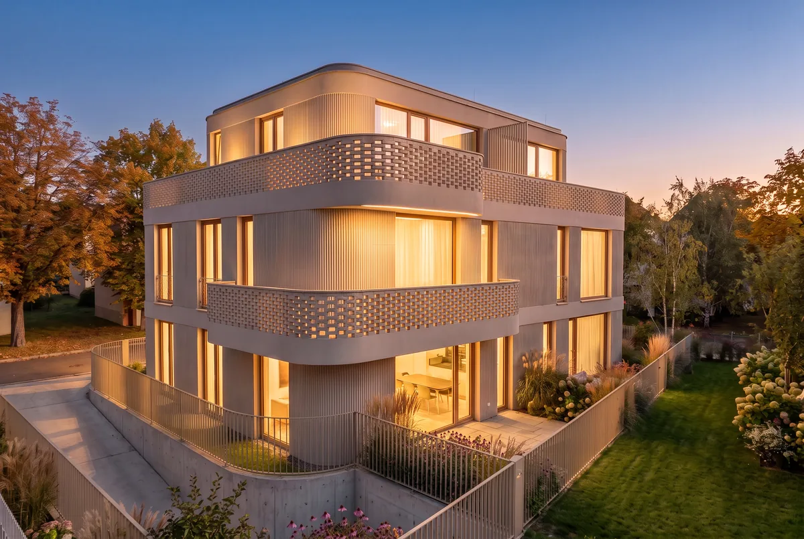
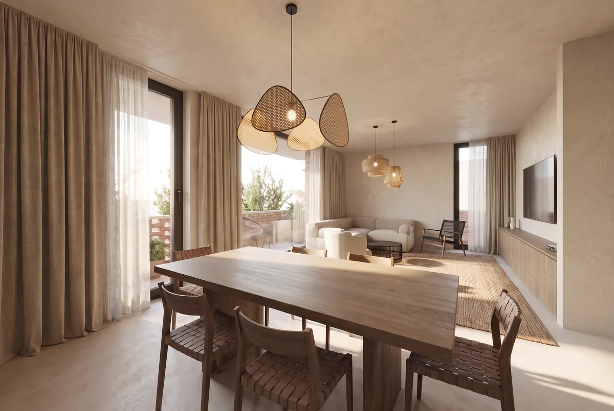
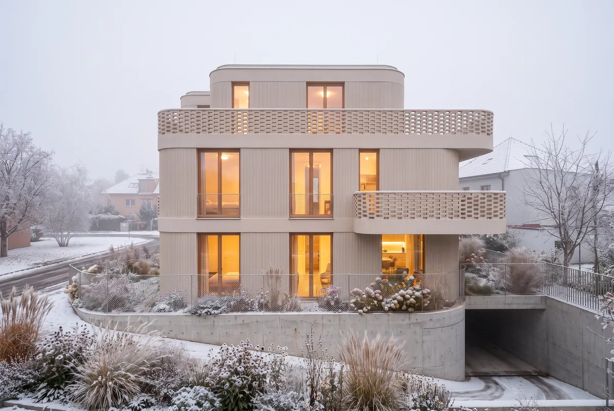
Vizualizace JA Architekti. Zařízení interiéru je ilustrativní.
Byty v přízemí mají vlastní zahradu o 84 a 91 m², patro balkony a horní byty střešní terasy přes 40 m². Obytné místnosti jsou otočené k jihu, do zeleně.
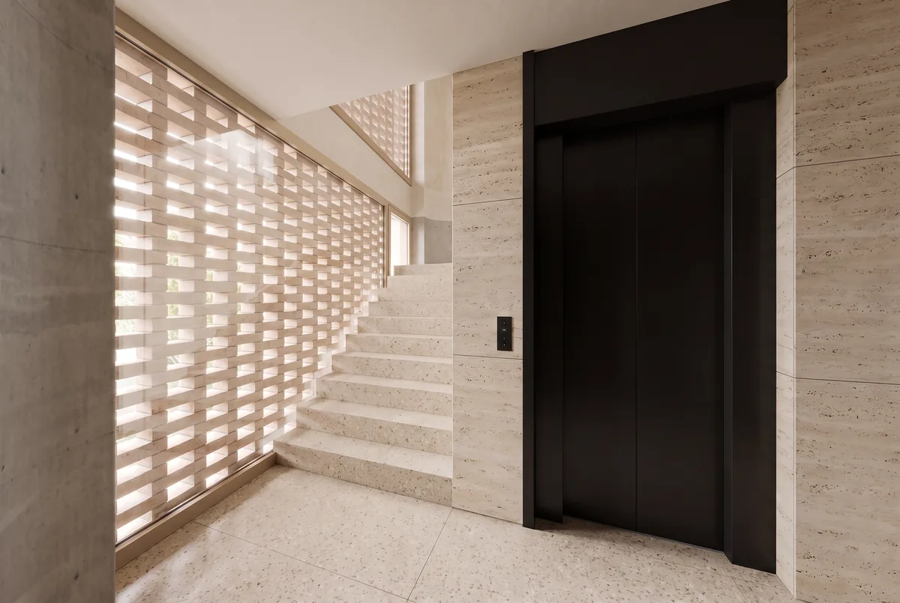
Perforované zdivo na zábradlích a ve vstupní hale propouští světlo a zároveň chrání soukromí. Uvnitř omítky v teplých tónech, dřevo a kámen.
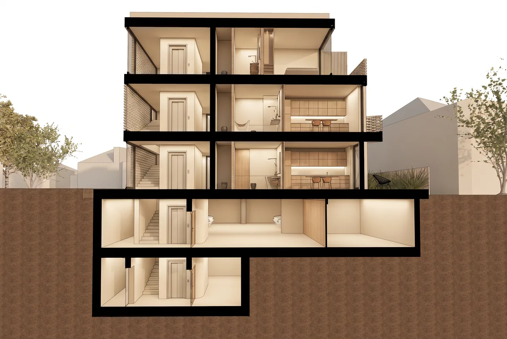
Tři nadzemní podlaží, pod nimi garáž se sedmi stáními a ještě níž sklepy a technika. Výtah jezdí ze sklepa až ke dveřím bytu.
02 Byty
Volný Rezervovaný Prodaný
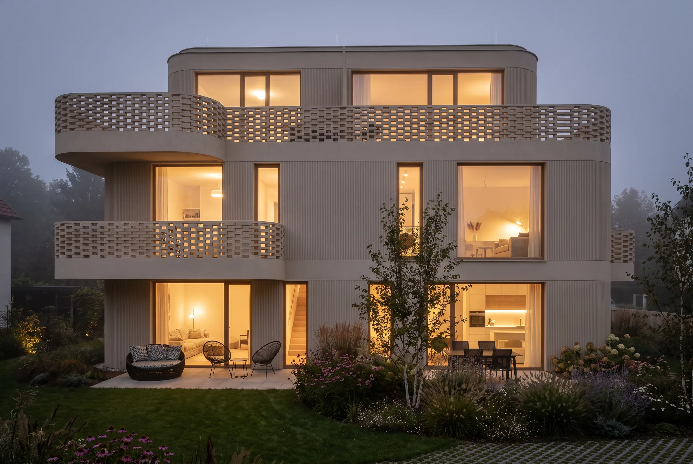
Najeďte myší na bytVolnýRezervovanýProdanýKliknutím otevřete detail bytu a půdorys
Půdorys z projektové dokumentace (08/2026). Plocha bytu orientačně dle NV 366/2013 Sb. Závazné údaje budou v prohlášení vlastníka.
| Byt | Podlaží | Dispozice | Plocha | Terasa | Celkem | Cena | Stav | Detail |
|---|
03 Ceník
Byty prodáváme v průběhu stavebního řízení. Kdo se rozhodne teď, získá slevu z ceny bytu podle výše složené zálohy. Záloha se započítává do kupní ceny.
Ceny bytů jsou uvedeny bez garážového stání a sklepu, které lze přikoupit. Cena po slevě se zaokrouhluje na tisíce Kč. Ceník bytů, garážových stání a sklepů vám pošleme na vyžádání, stačí vyplnit formulář níže. Sleva se počítá z ceny bytu. Plocha bytu je uvedena jako podlahová plocha dle nařízení vlády č. 366/2013 Sb. (orientační odhad z půdorysů), závazná bude v prohlášení vlastníka.
3, 4 nebo 5 mil. Kč podle toho, jakou slevu chcete získat. Záloha je součástí kupní ceny.
Sleva 3, 4 nebo 5 % z ceny bytu se promítne do rezervační a následně kupní smlouvy.
Pokud stavební povolení nenabude právní moci do 31. 10. 2028, vrátíme vám zálohu v plné výši. Způsob uložení zálohy upravuje rezervační smlouva.
04 Standard
Údaje vycházejí z projektové dokumentace pro povolení stavby (08/2026). Stavební řízení probíhá, finální řešení, dispozice a plochy se mohou změnit.
05 Lokalita
Nárožní parcela v klidné vilové zástavbě s rodinnými domy. Les na dosah, Vltava pod kopcem, centrum tramvají.
Dokumentace podána, souhlas IPR Praha 19. 10. 2026.
Rezervace se slevou až 5 %.
Předpokládané nabytí právní moci.
Předpokládané předání bytů.